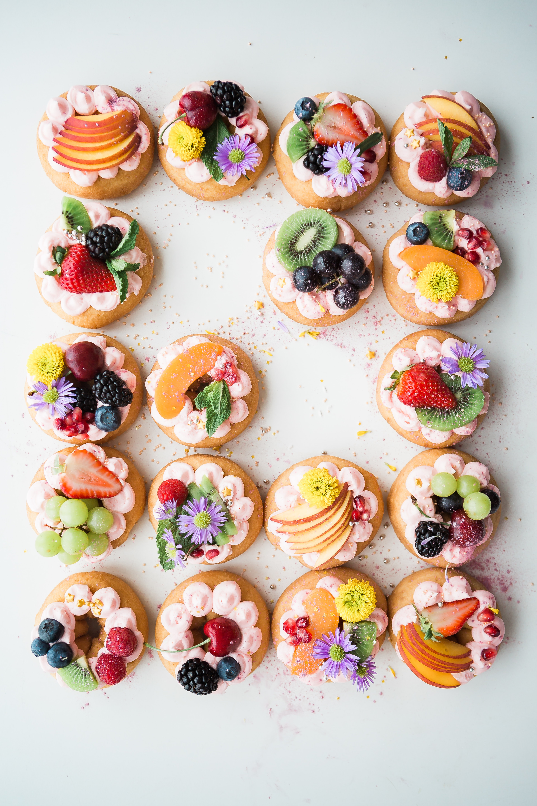

Baking is a method of preparing food that uses dry heat, typically in an oven, but can also be done in hot ashes, or on hot stones. The most common baked item is bread but many other types of foods are baked. Heat is gradually transferred "from the surface of cakes, cookies, and breads to their center. As heat travels through, it transforms batters and doughs into baked goods and more with a firm dry crust and a softer center". Baking can be combined with grilling to produce a hybrid barbecue variant by using both methods simultaneously, or one after the other. Baking is related to barbecuing because the concept of the masonry oven is similar to that of a smoke pit.
Because of historical social and familial roles, baking has traditionally been performed at home by women for day-to-day meals and by men in bakeries and restaurants for local consumption. When production was industrialized, baking was automated by machines in large factories. The art of baking remains a fundamental skill and is important for nutrition, as baked goods, especially breads, are a common and important food, both from an economic and cultural point of view. A person who prepares baked goods as a profession is called a baker. On a related note, a pastry chef is someone who is trained in the art of making pastries, desserts, bread and other baked goods.
